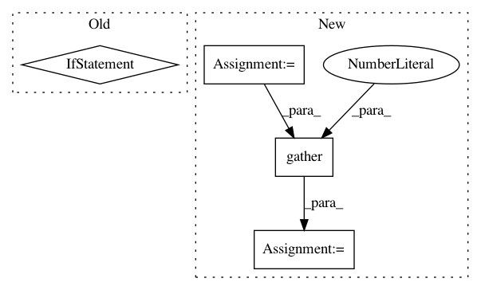

1c75176947730de8322acf6ad996096625e92e3a,tensorflow_lattice/python/rtl_layer.py,RTL,call,#RTL#Any#,217
Before Change
// Concat into (-1, lattice_rank) for a single lattice
lattice_inputs.append(
tf.concat([input_tensors[i] for i in inputs_for_unit], axis=1))
if len(lattice_inputs) > 1:
// Stack into (-1, units, lattice_rank) for multi-unit lattice layer
lattice_inputs = tf.stack(lattice_inputs, axis=1)
else:
lattice_inputs = lattice_inputs[0]
output_monotonicity = max(monotonicities)
// Call each lattice layer and store based on output monotonicy.
outputs_for_monotonicity[output_monotonicity].append(
self._lattice_layers[monotonicities](lattice_inputs))
After Change
else:
input_tensors.append(items)
if len(input_tensors) == 1:
flattened_input = input_tensors[0]
else:
flattened_input = tf.concat(input_tensors, axis=1)
// outputs_for_monotonicity[0] are non-monotonic outputs
// outputs_for_monotonicity[1] are monotonic outputs
outputs_for_monotonicity = [[], []]
for monotonicities, inputs_for_units in self._rtl_structure:
if len(inputs_for_units) == 1:
inputs_for_units = inputs_for_units[0]
lattice_inputs = tf.gather(flattened_input, inputs_for_units, axis=1)
output_monotonicity = max(monotonicities)
// Call each lattice layer and store based on output monotonicy.
outputs_for_monotonicity[output_monotonicity].append(
self._lattice_layers[str(monotonicities)](lattice_inputs))
In pattern: SUPERPATTERN
Frequency: 3
Non-data size: 4
Instances
Project Name: tensorflow/lattice
Commit Name: 1c75176947730de8322acf6ad996096625e92e3a
Time: 2020-06-15
Author: no-reply@google.com
File Name: tensorflow_lattice/python/rtl_layer.py
Class Name: RTL
Method Name: call
Project Name: OpenNMT/OpenNMT-py
Commit Name: 0e7bfac76b97e7630102687f7e6309e00e190091
Time: 2018-11-13
Author: benzurdopeters@gmail.com
File Name: onmt/translate/translator.py
Class Name: Translator
Method Name: _score_target
Project Name: ixaxaar/pytorch-dnc
Commit Name: 2026a8939d9ccc3e26ac776db5b4788846fd166c
Time: 2017-12-03
Author: root@ixaxaar.in
File Name: dnc/sparse_memory.py
Class Name: SparseMemory
Method Name: read_from_sparse_memory